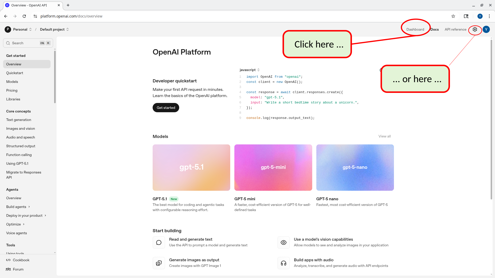

80 80. Step 7: Set Up OpenAI API
The app sends each new task’s title to OpenAI and gets back a label such as “work” or “shopping”. This chapter gets you an OpenAI API key (the secret password your code uses to call OpenAI), with a budget of $5 that you can never go over, and stores the key where the app’s code can use it.
OpenAI is the only part of the app that costs real money: about $5, prepaid. The app uses a small, cheap model (gpt-4o-mini): one label costs a tiny fraction of a cent, so $5 lasts far longer than this course.
As you go, copy each value into the Task App Setup Worksheet (see Classes 10–12: Start here): your OpenAI email, your budget, the project name and the key.
Click here https://platform.openai.com/docs/quickstart for the OpenAI official quickstart guide.
See below for step by step instructions.
80.1 Create OpenAI Account
Go to the OpenAI Platform: https://platform.openai.com/
This is OpenAI’s API platform, the site for developers. It is separate from ChatGPT: a ChatGPT subscription does not include API use.
Sign up or log in to your account. Creating your first API key requires a phone number that can receive a text message.
Open the Dashboard (or click on the gear for settings)


80.2 Buy $5 of credit, without auto-reload
The API is prepaid: you buy credit first, and each request uses up a little of it.
- Click the gear icon (Settings) and open Billing.
- Click Add payment details.
- Change the amount to $5 (the minimum; the default is $10).
- Before you confirm, turn off “Use auto-reload”, which starts out on.
With auto-reload off, OpenAI never charges your card again on its own. When the credit is used up, requests stop working until you buy more.
80.3 Create a project named task-app
All OpenAI API keys are associated with a “project”. You automatically have one “Default Project”. However, it can be helpful to create a new OpenAI “project” for every website or other product you are creating. For this app, create a project named task-app: you need it to set the app’s spend limit (next section), and the app’s key goes inside it.
The quickest way is the project menu at the top left of platform.openai.com. You can also use the settings, as the screenshots below show.
OpenAI “projects” allow for more control as to how your API Keys are used.
When you use a “project” …
you can have several people in your team share the API Key
you can set more fine grained permissions as to how the project can use the key
See here for more info about OpenAI projects: https://help.openai.com/en/articles/9186755-managing-projects-in-the-api-platform
To create a project, do the following:

80.3.2 Select “projects”

80.3.3 Click “create”

80.3.4 Give your project a name

80.4 Set a hard spend limit
The credit you bought (without auto-reload) is your total budget. A spend limit on the project is a second safety net.
- In the
task-appproject’s settings, go to Limits > Spend > Edit spend limit. - Enter a monthly limit of
5. - Turn on Enforce a hard limit, and save.
With the hard limit on, OpenAI refuses the project’s requests once it reaches the limit (there can be a small delay). OpenAI also emails you when spending reaches the limit.
The two settings protect you in different ways:
- Prepaid credit without auto-reload limits the whole account: once the $5 is gone, nothing more is charged, because OpenAI never charges your card again on its own.
- The project’s hard spend limit limits one project per month. If a bug in your code called OpenAI in a loop, or someone got hold of the project’s key, the project would be stopped at $5 a month.
Either one alone keeps the course cheap; together, a single mistake can’t cost you more than you planned.
80.5 Create API keys
Create the key inside the task-app project (select it in the project menu first), so the spend limit applies to it.
80.5.1 Click API Keys

80.5.2 Click Create new secret key.

80.5.3 Key Owner - “YOU” or a “SERVICE ACCOUNT”
When creating the key you need to specify whether the key is owned by “you” or by a “service account”. See more explanation below.


API Keys that are owned directly by “you” are useful when you are performing experiments with AI or just getting to understand how things work. In addition some third-party websites ask you to upload an OpenAI API key so that the work that they do for you is billed to YOUR OpenAI API key - i.e. the service doesn’t pay for the AI processing it does on your behalf, you do. It makes sense for these types of keys to be owned by “You”.
However, when creating software products that use API Keys it’s recommended to create a “Service Account” for that product and have the key be owned by that service account. The use of the key can then be tracked to your product’s “service account”.
Setting permissions for keys owned by “You”
If you create a key that is owned by “You” (see above) then you are given the opportunity to set permissions that govern what is and what isn’t allowed to be done with the key. This is especially important if you are going to be using your API Key to access 3rd party services. You can restrict the API Key to only allow some features to ensure that the 3rd party service doesn’t abuse the use of the key (as use of the API key would be charged to you).
If you create a key that is owned by a “Service Account” (as recommended for this project), the “Create new secret key” dialog does not offer these permission settings (see the screenshot above). The next section explains why.
Setting permissions for keys owned by a “Service Account”
By contrast, the permissions for a key that is owned by a “Service Account” are governed by the service account’s “role”. To change what the key can do, you must change the service account’s roles/permissions, not the key. We’ll see below (after saving the key) how to modify the permissions for such a key.
80.5.4 Copy the key immediately — you won’t be able to see it again.
When you click “create secret key” (see above) you will be shown the actual key. Copy the key immediately into the worksheet — you won’t be able to see it again.
The key should be treated in the same way as a password. (In the following screenshot the API Key is purposely obscured). It is secret information which should never be divulged to anyone outside of your organization. Even within your organization, only people who have a “need to know” should be given access to the actual key value. Therefore do NOT commit this to git because git repos are often shared with people who should not have access to this type of info.

In the section “Store as Supabase Secret” below, we explain how to store this API Key as a Supabase secret (with npx supabase secrets set). This is because the communication with OpenAI will be done via a Supabase Edge Function. The app’s other secret keys (Stripe’s, for example) are stored the same way. The .env.local file (see Step 3: Storing your private info (env files, etc)) holds only two values for the front end, and neither of them is secret.
While you are learning, keep the key in the setup worksheet, which holds all of the app’s IDs, addresses and keys in one place, with notes on where each one came from and where it goes next. This is NOT the recommended approach for actual software development projects, and the worksheet must be kept safe: keep it in the full-stack-demo-app folder, next to the task-app code folder and not inside it, so Git can never upload it to GitHub. Don’t email it, post it, or show it while sharing your screen.
80.6 Setting permissions for keys owned by a “Service Account”
When you create a key owned by a service account, OpenAI adds the service account to your project as a “bot member” (the “Create new secret key” dialog says so; see the screenshot above). The service account is managed like the project’s other members.
OpenAI changes its dashboard often, so the exact page names may differ from what you see. To see and manage your keys, open the API keys page, https://platform.openai.com/api-keys (or click the settings (gear) button and choose API keys). For the current steps to change what a key may do, see OpenAI’s help article Assign API key permissions.
The Admin keys page in the settings is about a different kind of key, used to manage an OpenAI organization. You don’t need it for this tutorial.
80.7 Store as Supabase Secret
You’ll configure your Edge Functions to read OPENAI_API_KEY from the Supabase environment.
Install Supabase CLI (if you haven’t already)
Link your local project to your Supabase project (if you haven’t already)
Set the secret in Supabase. Type the command yourself, so the key never goes into Claude’s chat. The worksheet’s Commands sheet builds the line for you, with your own key in it: copy the
npx supabase secrets set OPENAI_API_KEY=...line, paste it into VS Code’s terminal (in thetask-appfolder), and pressEnter. The line looks like this, where “your-openai-key” is the text of the key that you just got from OpenAI:npx supabase secrets set OPENAI_API_KEY=your-openai-keyWhat the pieces mean:
npx supabaseruns the Supabase CLI.secrets setstores a secret, a named value that your Edge Functions can read on Supabase’s servers but that never appears in your code or on GitHub.OPENAI_API_KEY=sk-proj-...is the secret’s name, then=, then its value: your key. There are no spaces around the=. The function’s code reads the key by this name.
Confirm that the key was set:
You can run the following command to confirm that there is an OPENAI_API_KEY set to some value. However, the “DIGEST” that is shown here is NOT the actual key. This is done for security reasons. You can delete the key and reset it but you cannot see the actual value for the key.
npx supabase secrets listNAME | DIGEST ----------------|------------------------------------------------------------------ OPENAI_API_KEY | 661627b246146bfd00805f19997db43c066fba3002fabe2ed6a9922c8db29f87You can also see the same info on the Supabase website dashboard, under Edge Functions → Secrets (https://supabase.com/dashboard/project/_/functions/secrets).
Practice Questions
Easy
Question 1 · True or false
Every OpenAI API key belongs to a project, and every account automatically has a “Default Project”.
Question 2 · Multiple choice
When can you see the full value of a new OpenAI API key?
- Any time, on the API keys page
- Only once, right after you create it
- Whenever you run
npx supabase secrets list - After you ask OpenAI’s support team
Question 3 · Short answer
Why should an API key be treated like a password? Give two reasons.
Question 4 · True or false
Keeping all of your project’s secret keys in one spreadsheet, like the setup worksheet, is the recommended approach for real software projects.
Question 5 · True or false
If you pay for a ChatGPT subscription, your app can call the OpenAI API without buying API credit.
Medium
Question 6 · Multiple choice
You are creating the key that task-app itself will use. According to the page, who should own this key?
- You, because you are the developer
- A service account created for the product
- The first user who signs up for task-app
- It doesn’t matter; all keys behave the same
Question 7 · Short answer
Why might you create a separate OpenAI project for each website or product you build?
Question 8 · Scenario
A third-party website asks you to paste in your OpenAI API key so it can do AI work for you. What should you keep in mind, and how can you limit the risk?
Question 9 · Write the command
Your new key is sk-abc123. Write the command that stores it as a Supabase secret named OPENAI_API_KEY.
Question 10 · Predict the output
You run npx supabase secrets list and see a row with the name OPENAI_API_KEY and the digest 661627b246146bfd.... Is the digest your OpenAI key? What does this output tell you?
Question 11 · Short answer
Why is the OpenAI key stored as a Supabase secret rather than in .env.local?
Question 12 · Ordering
Put these steps in the right order.
- Run
npx supabase secrets listto confirm that the secret is set - In the
task-appproject, click Create new secret key and choose the key’s owner - Run
npx supabase secrets set OPENAI_API_KEY=... - Buy $5 of credit, with auto-reload turned off
- Copy the key immediately into the worksheet
- Create a project named
task-appand set its hard spend limit
Question 13 · Scenario
Maria bought $5 of credit but left “Use auto-reload” on, and she skipped the hard spend limit. A bug in her code calls OpenAI over and over. What can happen, and which two settings would have protected her?
Question 14 · Short answer
Why does the page have you paste the npx supabase secrets set OPENAI_API_KEY=... line into the terminal yourself, instead of giving the key to Claude and asking it to run the command?
Hard
Question 15 · Scenario
You accidentally pushed a file containing your OpenAI key to a public GitHub repository. What should you do, and why isn’t deleting the file from the repository enough?
Question 16 · Scenario
You run npx supabase secrets set OPENAI_API_KEY=... and get the message Cannot find project ref. Have you run supabase link? What went wrong, and how do you fix it?
Question 17 · Find the bug
To save time, a classmate skips the Edge Function and calls OpenAI directly from the app’s browser code, with this line in .env.local:
NEXT_PUBLIC_OPENAI_API_KEY="sk-..."Explain the problem.
Question 18 · Find the bug
Sam types this command, with his own key:
npx supabase secrets set OPENAI_API_KEY = sk-proj-abc123What is wrong with it?